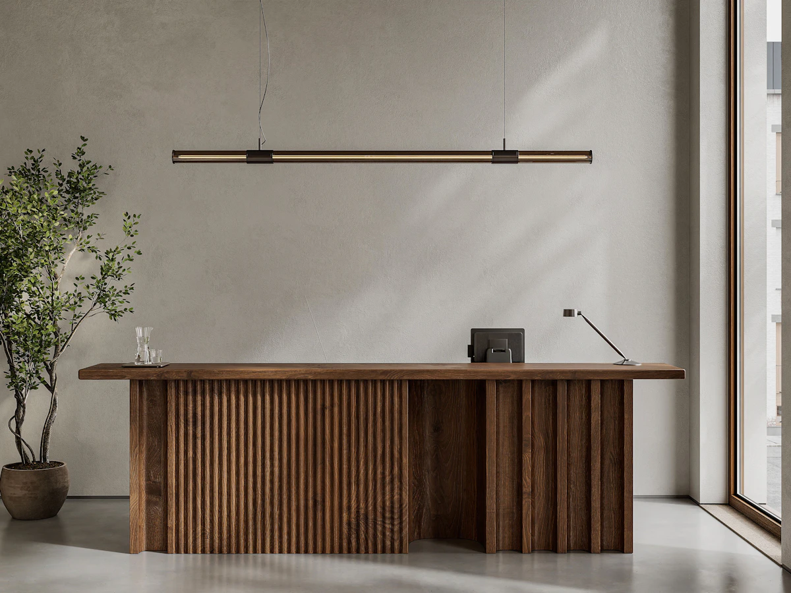
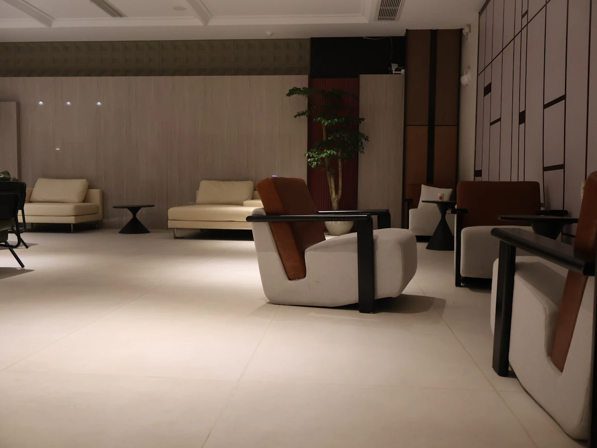
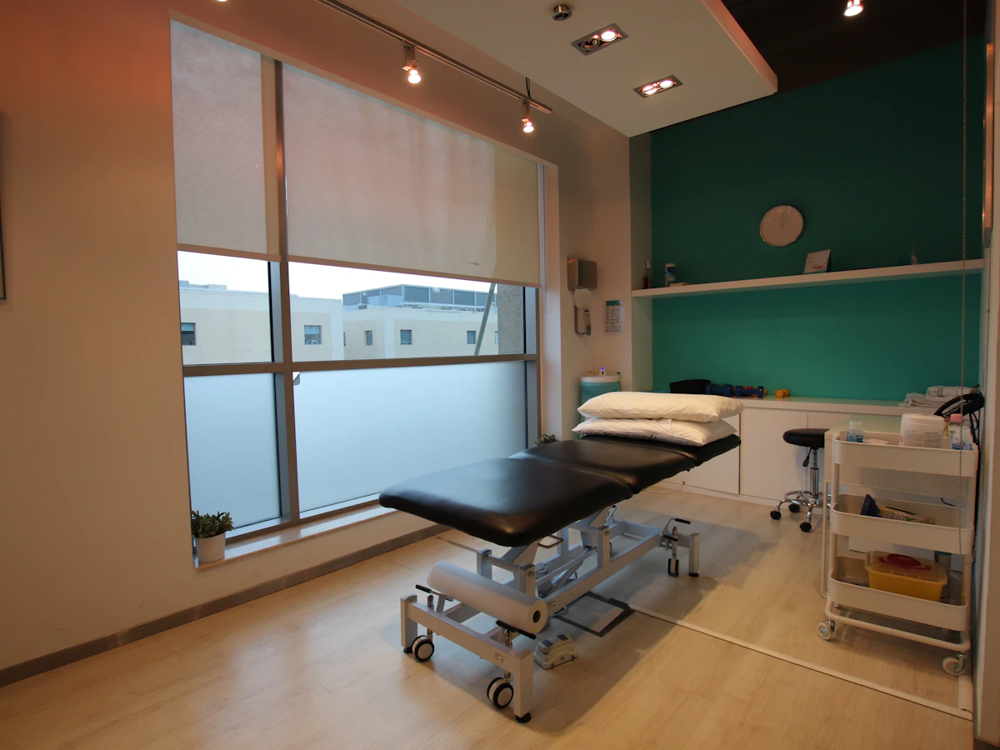

ABOUT
院の紹介
こわばった体を、やわらかくほどく場所でありたい。
そよぎ整骨院の想いと、スタッフをご紹介します。
GREETING
院長あいさつ
院長／柔道整復師
青木 拓真TAKUMA AOKI
はじめまして、院長の青木拓真です。柔道整復師として15年、さまざまな方の体と向き合ってきました。その中で多く出会ったのが、「忙しくて、つらいのをつい後回しにしてしまう」というデスクワークの方々です。
肩こりや腰痛は、毎日の姿勢や体の使い方と深く関わっています。そよぎ整骨院では、つらい場所をほぐすだけでなく、「なぜそうなったのか」をご本人と一緒に確認し、日常で続けられるセルフケアまでお伝えすることを大切にしています。
平日は21時まで、日曜も営業しています。お仕事帰りに、ほっと一息つける場所として気軽にお立ち寄りください。
- 資格
- 柔道整復師（国家資格）
- 施術歴
- 15年
- 趣味
- 週末の山歩き、コーヒーを淹れること
STAFF
スタッフ紹介
柔道整復師／ストレッチ・姿勢指導担当
森 さくらSAKURA MORI
ストレッチと姿勢指導を担当している森です。デスクワークが続くと、気づかないうちに体が縮こまりがちです。施術では、体が伸びていく心地よさを感じていただけるよう、ていねいに進めていきます。
ご自宅や職場でできる簡単なストレッチもお伝えしています。「これなら続けられそう」と思っていただけるものを一緒に見つけましょう。
- 資格
- 柔道整復師（国家資格）
- 担当
- リフレッシュストレッチ、姿勢指導
- 趣味
- ヨガ、季節の花を育てること
CLINIC
院内紹介
木のぬくもりと植物に囲まれた、明るく落ち着いた空間です。
-

受付木目と白を基調にした、明るい受付です。 -

待合スペースやわらかいソファで、ゆったりお待ちいただけます。 -

施術室窓から光が入る、明るく清潔な施術室です。
PHILOSOPHY
院の想い
そよぎ
「そよぎ」とは、木の葉がそよそよと風に揺れること。
風に揺れる葉のように、こわばった体をやわらかくほどく場所でありたい。
そんな想いを込めて名付けました。
-
原因から向き合う
つらい場所だけでなく、姿勢や体の使い方まで確認し、原因を一緒に考えます。
-
納得してから施術する
体の状態と施術内容をわかりやすくご説明し、ご納得いただいてから始めます。
-
続けられるケアを
忙しい毎日でも無理なく続けられる、セルフケアや通い方をご提案します。